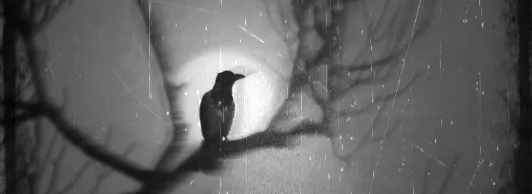
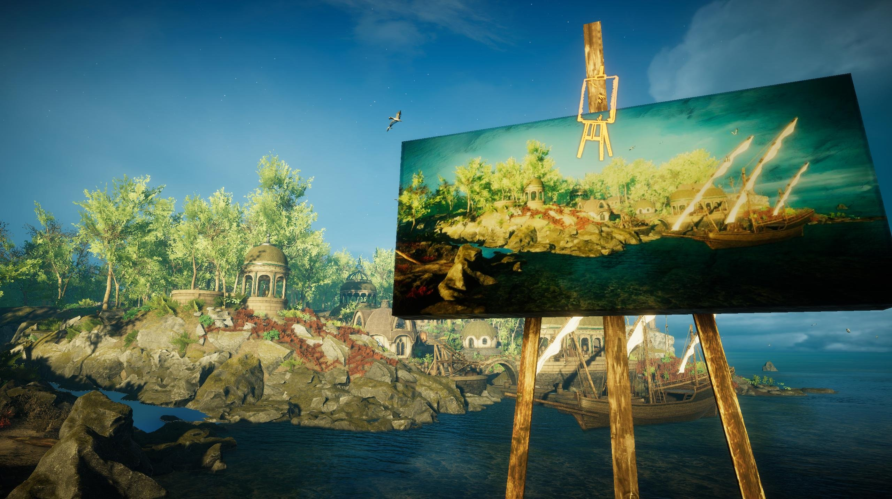
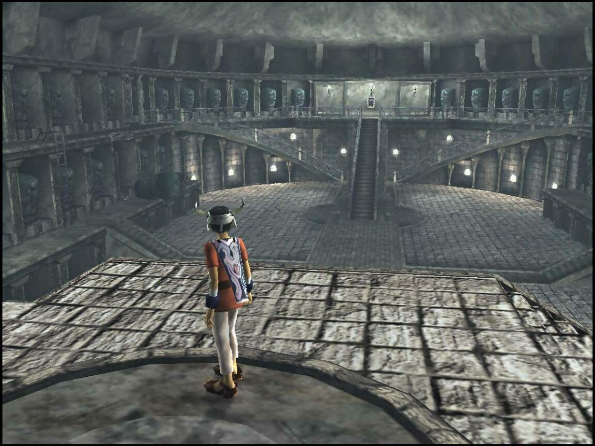
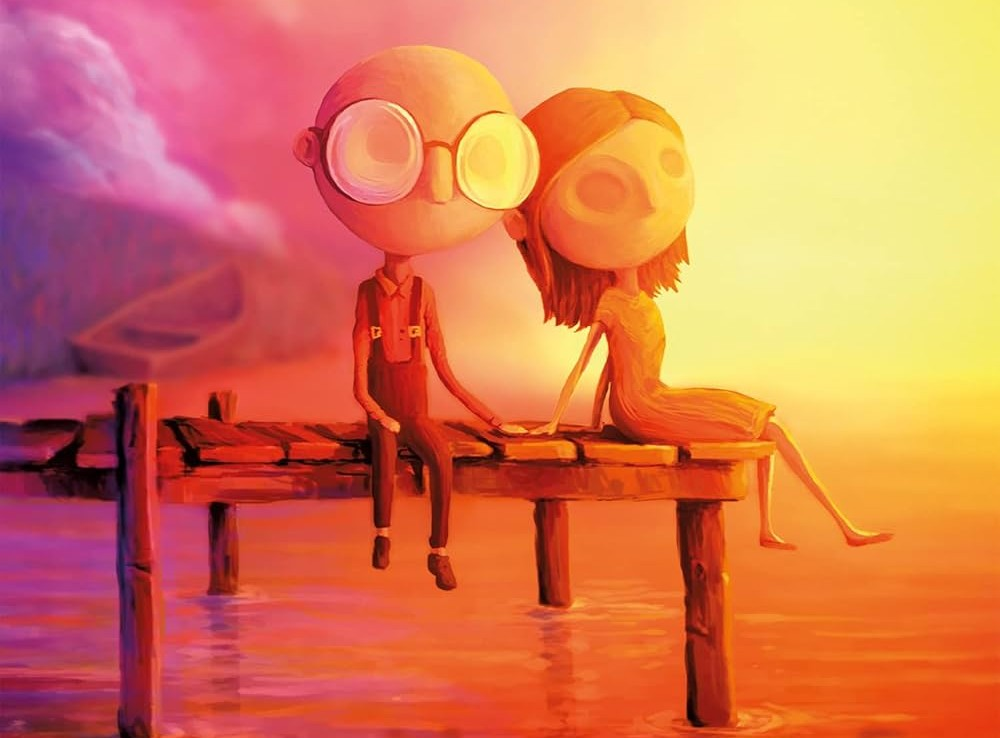
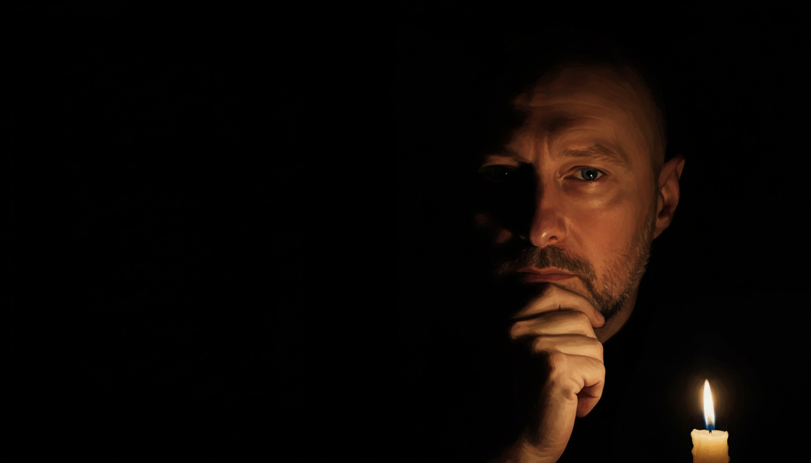

Di video simili ce n'è pieno il web. Questo è diverso — o almeno, ci prova. Non una lista di titoli con punteggi e stelline. Un viaggio tra armonie, timbri e silenzi. Tre giochi per volta, con i motivi tecnici per cui quella musica è straordinaria. Allacciate le cinture.

EastShade
Iniziamo senza alcun botto. Anzi, con gli archi eterei di Cave on the Shore — la prima traccia che sentite appena entrate in questo gioco del 2019 dove non impugnate una spada, ma un cavalletto.
In EastShade siete un pittore che vaga su un'isola splendida e misteriosa, dipingendo paesaggi e parlando con abitanti antropomorfi. La colonna sonora non fa altro che avvolgervi con il colore giusto — senza mai distrarre. Niente temi da boss epici, niente urla. Solo archi morbidi, flauti leggeri e arpe che respirano con il paesaggio.

L'atmosfera è contemplativa, le armonie fluide, le progressioni ti cullano invece di stupirti. Molti paragonano questo stile a Jeremy Soule, quello di Skyrim. Ma è qualcosa di più intimo, raccolto, quasi cameristico.
Il dettaglio che mi ha colpito di più: i temi principali non sono melodici, sono armonici — o addirittura timbrici. Ti ritrovi in un dato posto anche solo ascoltando un accordo, perché quel luogo ha quel colore musicale, quel voicing spalmato nella tavolozza sonora. Un minimalismo bachiano applicato all'esplorazione.
Nel riascoltare la soundtrack per questo video ho rivissuto ogni momento del gioco. Una piccola chicca raramente citata. Ascolto e visita consigliati.
Ico — Michiru Oshima, 2001
Dall'esplosione di colori di EastShade passiamo a qualcosa di completamente diverso. Stessa parola — minimalismo — ma qui significa sottrazione.
Definire Ico un cult è quasi riduttivo. Se EastShade era un quadro impressionista, Ico è un castello di marmo che il vento non riesce a consumare. Un gioco fatto di silenzi, di mani che si stringono, di ambienti immensi che respirano mistero e solitudine.

La maestria di questa colonna sonora sta nell'economia di mezzi. Gran parte del gioco ruota attorno a un unico tema armonico di tre accordi. Tre. Presentati in forme sempre diverse — chitarre acustiche antiche, synth ovattati — la ripetizione non annoia mai, crea isolamento. Come il castello: enorme, maestoso, eppure soffocante.
In Ico il silenzio non è assenza. È una corona musicale di attesa tra un momento e l'altro. Il vento che soffia è musica. I passi nei corridoi vuoti sono musica. Non ti rendi conto se la soundtrack sia sound design o se il sound design sia la soundtrack.
Il vero colpo al cuore è You Were There. Inizia quasi rumorosa, poi arriva un arpeggio di piano elettrico inondato di riverbero. Sopra, una scelta geniale: una voce bianca, una voce di bambino. Liberatoria — eppure non ti libera dalla sensazione di ritrovarti perduto in un luogo immenso e vuoto.
Il dettaglio tecnico che mi fa impazzire: quando entra la batteria, sembra portare stabilità. Ma è una stabilità fittizia. La struttura accordale si muove in tempo ternario — 6/8 — mentre la batteria procede in 2/4. Un caso di polimetro. Instabile e granitico come il castello in cui siete intrappolati.
Last Day of June — Steven Wilson, 2017
Qui il discorso si fa quasi sacrilego. Perché per un purista può sembrare un delitto prendere le canzoni tratte dagli album solisti di Wilson — Insurgentes, Grace for Drowning, soprattutto The Raven That Refused to Sing — e smontarle. Però quando il delitto lo compie il compositore stesso, è tutta un'altra cosa.

Last Day of June è una storia d'amore, di perdita e del tentativo disperato di cambiare il passato. Graficamente è un quadro animato. Tutto è affidato all'espressività dei corpi e alla musica di Wilson, che per l'occasione ha ristrutturato le sue composizioni per l'intera avventura.
Questa soundtrack è una lezione di umiltà. Capire che le idee artistiche non sono mai qualcosa di finito o intoccabile — nemmeno se le hai consegnate ai posteri in CD curatissimi.
Wilson ha distrutto le sue creature per far sì che potessero narrare una storia nuova. Lirica e commovente come sono le sue. Tutta la colonna sonora è un perdersi in tristezza e ritrovarsi in una malinconia serena — tutto nello stesso tempo.

Non c'è molto da analizzare tecnicamente, questa volta. Dovete divorare i dischi di Wilson e poi giocare. Stop.